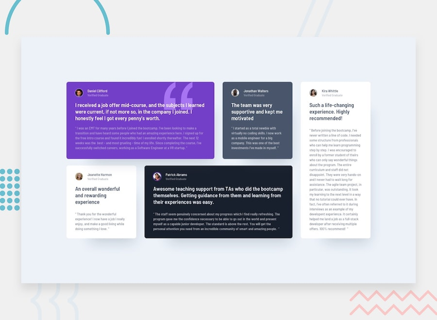

Frontend Mentor
Retos del repositorio
Colección de soluciones por carpeta. Cada tarjeta enlaza al reto y muestra una captura de la implementación.
En GitHub Pages la URL base es
.
Cada reto vive en su propia ruta bajo ese origen.
Proyectos
-
 QR code component /qr-code-component/
QR code component /qr-code-component/ -
 Blog preview card /blog-preview-card/
Blog preview card /blog-preview-card/ -
 Social links profile /social-links-profile/
Social links profile /social-links-profile/ -
 Recipe page /recipe-page/
Recipe page /recipe-page/ -
 Product preview card /product-preview-card-component/
Product preview card /product-preview-card-component/ -
 Four card feature section /four-card-feature-section/
Four card feature section /four-card-feature-section/ -

Testimonials grid section /testimonials-grid-section/